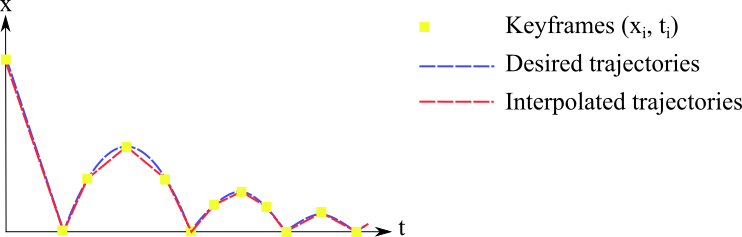

Practical 4 - Procedural animation
Procedural animation, also known as descriptive animation, keyframed animation or forward kinematic, consists in describing the motion of an object by specifying key postures of this objects. The motion between the key postures, also called keyframes, is interpolated.
In Computer Graphics, any parameters of an object can be keyframed to create an animation, e.g. position, orientation, scale, colors and visibility.
The focus of this practical is to be able to keyframe the transformation matrices of a renderable in order to animate them.
1. About keyframe animation
Below, we quickly illustrate the keyframe process for a 1D point described by a \(x\) coordinates.
Let's imagine that you want to animate a bouncing ball. You have in mind the trajectory of this ball (the blue line) but you do not want to specify manually the position of the ball at each frame. Instead, you discretize the trajectory into keyframes (the yellow squares), which means that you specify the position of your object at specific times. By linearly interpolating the position of your object between the keyframes, you can approximate the trajectory you wanted (red line). The more keyframes you have, the more control you have (but also more work you have to do!).
For a time \(t \in [t_{i}, t_{i+1}] \), the position \(x\) of the point is linearly interpolated between the corresponding keyframed positions \(\left\lbrace x_{i}, x_{i+1} \right\rbrace\):
\[ x(t) = \displaystyle \frac{t_{i+1}-t}{t_{i+1}-t_{i}}x_{t_{i}} + \frac{t-t_{i}}{t_{i+1}-t_{i}}x_{t_{i+1}} = \displaystyle (1 - f)\cdot x_{t_i} + f\cdot x_{t_{i+1}} \]with \(f = \frac{t - t_{i}}{t_{i+1} -t_i} \in[0,1]\)
Such interpolations are quite efficient since they are linear. This is why we use as much as possible linear interpolation to achieve real-time or interactive performance.
2. About geometric transformation interpolation
In this practical, we propose you a keyframe system that can be applied to the local and parent transformations of HierarchicalRenderable. This means that at specific times, the transformation matrices are defined and the system interpolates between those keyframes to compute transformation matrices at any time. This will be use to animate our renderables.
Well, how can we interpolate between two transformation matrices?
2.1 Linear interpolation of matrices is not enough
Let's have a look to the two following matrices. One is the identity matrix and the other one represents a rotation of 90 degrees arround the \(X\) axis:
\[ \begin{array}{cccc} M_{1} = \begin{pmatrix} 1 & 0 & 0 & 0 \\ 0 & 1 & 0 & 0 \\ 0 & 0 & 1 & 0 \\ 0 & 0 & 0 & 1 \end{pmatrix} & & M_{2} = \begin{pmatrix} 1 & 0 & 0 & 0 \\ 0 & 0 & -1 & 0 \\ 0 & 1 & 0 & 0 \\ 0 & 0 & 0 & 1 \end{pmatrix} \end{array} \]Now, suppose we want to interpolate between these two matrices, so we create a animated rotation. Half the way, we expect the transformation to be a 45 degree rotation arround the axis \(X\), something like this:
\[ M = \begin{pmatrix} 1 & 0 & 0 & 0 \\ 0 & \frac{\sqrt{2}}{2} & -\frac{\sqrt{2}}{2} & 0 \\ 0 & \frac{\sqrt{2}}{2} & \frac{\sqrt{2}}{2} & 0 \\ 0 & 0 & 0 & 1 \end{pmatrix} \]However, if we naively use linear interpolation, we get:
\[ M = 0.5M_{1}+0.5M_{2} = \begin{pmatrix} 1 & 0 & 0 & 0 \\ 0 & 0.5 & -0.5 & 0 \\ 0 & 0.5 & 0.5 & 0 \\ 0 & 0 & 0 & 1 \end{pmatrix} \]2.2 The solution: Decomposition
To correctly interpolate geometric transformations, a commonly used solution is to decompose the transformations into three components (translation, scale and rotation) and interpolate each of them separately.
A transformation matrix \(M\) can be composed as follow:
\[ M = \begin{pmatrix} R_{xx} \times s_{x} & R_{xy} \times s_{y} & R_{xz} \times s_{z} & t_{x} \\ R_{yx} \times s_{x} & R_{yy} \times s_{y} & R_{yz} \times s_{z} & t_{y} \\ R_{zx} \times s_{x} & R_{zy} \times s_{y} & R_{zz} \times s_{z} & t_{z} \\ 0 & 0 & 0 & 1 \\ \end{pmatrix} = TRS \]with
\[ \begin{array}{ccc} T = \begin{pmatrix} t_{x} & t_{y} & t_{z} \end{pmatrix} & S = \begin{pmatrix} s_{x} & s_{y} & s_{z} \end{pmatrix} & R = \begin{pmatrix} R_{xx} & R_{xy} & R_{xz} \\ R_{yx} & R_{yy} & R_{yz} \\ R_{zx} & R_{zy} & R_{zz} \\ \end{pmatrix} \\ \text{Translation} & \text{Scale} & \text{Rotation} \end{array} \]Thus, the rotation component can be converted into a quaternion which is better suited for interpolation. For this practical, no deep understanding of the quaternions is required. Just remember that they alleviate the matrix interpolation issue and must be of unit length to represent a valid rotation.
3. Reminder: How to compile from scratch
#Switch to a C++11 compiler (at ENSIMAG only)
source gcc493.sh
#Compile external libraries (if new lib has been added)
cd extlib/
make clean_all
make
#Compile project
cd ../
rm -rf build/
mkdir build/
cd build/
cmake ..
make -j 8
4. Additional files
- Download the source of the practical here .
- Unzip it.
- Copy the extlib directory from you previous practical in this new directory called practical4.
Alternatively, you can simple create a symbolic link to the existing libraries.
For example: cd practical4 then ln -s ../practical1/extlib - Compile your project by following the previous instructions.
Exercice 1: Complete the interpolation framework
- Read carefully the documentations and comments of KeyframedCylinder.hpp/cpp and KeyframeCollection.hpp/cpp.
- Read the todos markups and implement the function
KeyframeCollection::interpolateTransformation(). - Read carefully the file practical_04_scene.cpp to understand how to build a keyframed animation with the framework.
Exercice 2: Project-related assignment.
Once the framework completed and the given examples running, you should be ready to start working on the animation of your project.